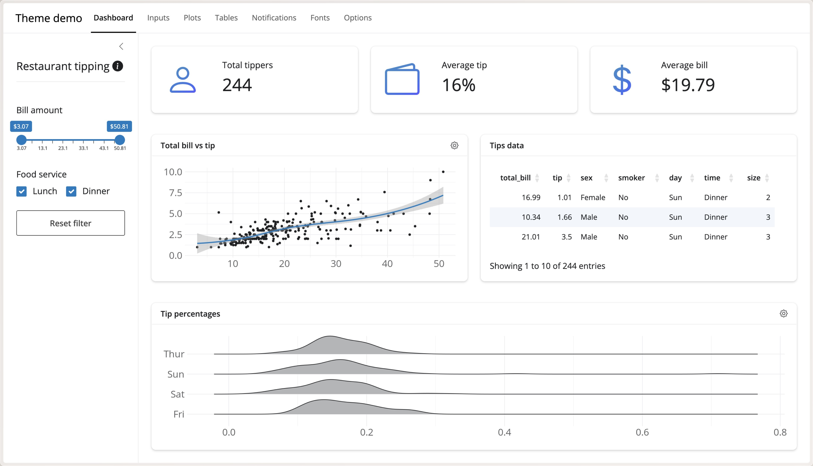

First Impressions Matter
Styling Data Products People Actually Want To Use


Color Shapes Attention and Tone

Color Shapes Attention and Tone

Color Shapes Attention and Tone

Typography Shapes Hierarchy and Voice

Typography Shapes Hierarchy and Voice


You Don’t Need to Start From Scratch


Bootstrap Is Already Doing More Than You Think

But a Good Default Is Still a Default


Bootswatch Gives Us a Better Starting Point

Possibilities of Bootswatch


Applying Bootswatch Themes: Shiny
bslib::page_navbar(
title = "Dashboard",
bslib::nav_panel(...)
)


Make Those Choices Reusable

Brand Recognition: Color


Brand Recognition: Font

Remember This One?
First impressions are not the whole story
But they can determine whether someone stays long enough to learn the rest.
Talk Materials and Additional Resources